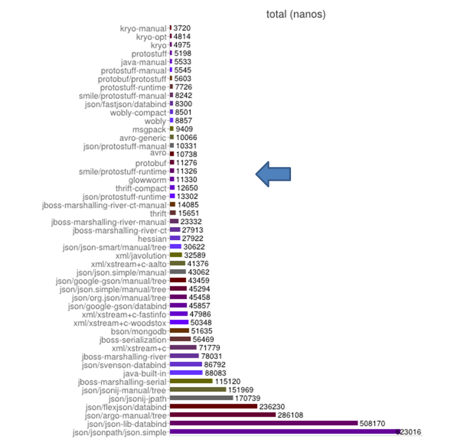
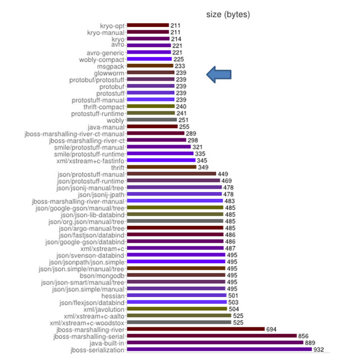
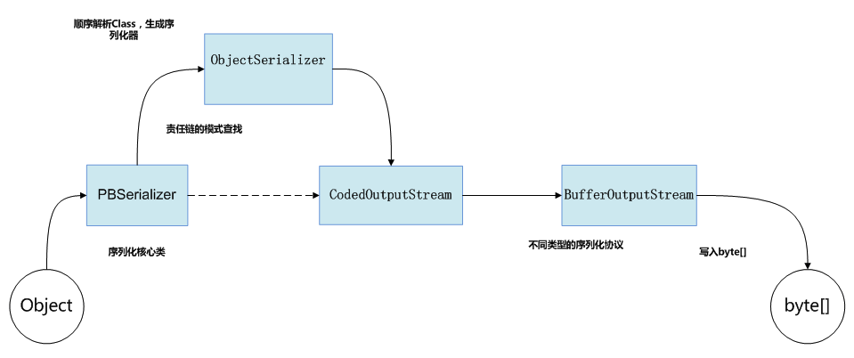
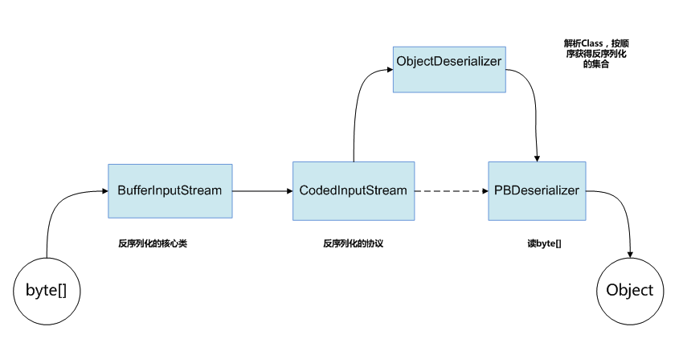

大概介绍一下
别的不说，先上两张图，这两张图是在jvm序列化对比测试（https://github.com/eishay/jvm-serializers）的结果。这个对比测试涵盖了适用于java的大部分序列化组件，测试内容包括首先进行一段时间的预热（默认序列化+反序列化3000次），然后分别进行500次序列化和反序列化，最后统计运行时间和序列化之后的大小。
如图所示，我们的glowworm并未名列前茅，可以说只是排名中上游，但你依然可以在glowworm周围看到大名鼎鼎的protobuf。
 图1.序列化+反序列化的时间  图2.序列化后的容量（byte）
glowworm是怎么做的
开发glowworm的初衷
众所周知，google的protobuf（http://code.google.com/p/protobuf/）作为老牌的序列化组件在google内部久经考验，在08年时贡献给了开源社区。protobuf无论从性能还是大小来说都是出类拔萃的， 但是我们不得不为每一个user javabean编写对应的proto文件。其实编写proto文件本身无可厚非，序列化就是一个通过解析对象结构把对象转成byte流的过程，解析对象结果本身是一个繁琐的过程，耗时耗力。所以protobuf用一个外部文件记录这个对象结构，那么每次遇到相同结构的对象时就省去了再次解析的过程，而且还能跨语言。
我们本来认为这是一件天经地义的事情，但是很显然fastjson（http://code.alibabatech.com/wiki/display/FastJSON/Home-zh）不这么认为。不得不说阿里的fastjson是地球上最好的基于json标准的的序列化组件，尤其在性能优化上做了大量的工作。而且用fastjson做序列化不需要写任何idl（Interface description language）文件，对于对象结构的解析会在第一次进行序列化的时候进行，并永久保存在jvm中，供以后复用。
但是作为序列化组件fastjson有一个天生的短板，就是json是以字符串进行传输的，而字符串在转化成byte占用了很大的空间，所以即便是强如fastjson也无法把容量降低到很低的水平。从图2中可以看到排名下半部分的都是基于xml或json格式进行序列化的组件，而上半部分多是直接把对象转成byte数组。
为什么不能参考protobuf的序列化协议和fastjson的架构开发一个序列化组件，既能保证大小又能兼顾性能呢。这就是我们开发glowworm的初衷。
glowworm的特点
1.不依赖第三方库
2.无需编写idl文件
3.支持各种数据类型
4.整体架构优秀
5.基于byte数组的序列化方案
glowworm的架构
图3、图4分别是序列化和反序列化的流程
 图3.序列化的流程  图4.反序列化的流程
如图所示，序列化和反序列化其实是对称的。序列化时从object转成byte[]的过程，反序列化时他的逆过程。
以序列化为例，PBSerializer类是序列化的业务类， 里面封装了几乎所有序列化操作，并且只对序列化器暴露。这样把大部分逻辑都汇总在了一处，方便后续扩展。
在开始进行序列化之前，首先会根据object的类型找到对应的序列化器，如果没有，就使用asm动态生成一个序列化器，并保存在jvm中，以便复用。序列化器重包含了如何针对object结构调用不同byte[]写入的逻辑，当然对于一个复杂的javabean而言，序列化器中就是按顺序调用每一个属性的序列化器进行序列化，按顺序这点很重要，在下文会提及。
CodedOutputStream内封装了所有对byte数组操作的方法，比如：
public void writeInt(int i) {
writeRawVarint32(encodeZigZag32(i));
}
public void writeLong(long l) {
writeRawVarint64(encodeZigZag64(l));
}
而再往下一层的BufferOutputStream就是实实在在的操作数组了
反序列化的流程就是序列化的逆过程，在此不再赘述。
可以看出，无论是序列化还是反序列化，架构的层级都是一致的，彼此对称的，非常清晰简明，易于理解。